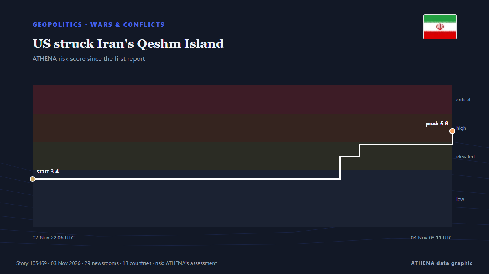

Guerras y conflictos
PatrocinadoPresentado por  Cybernetics and Artificial Intelligence Lab Welcome to the Cybernetics and Artificial Intelligence Laboratory, established at the Department of Business Administration of the National
Cybernetics and Artificial Intelligence Lab Welcome to the Cybernetics and Artificial Intelligence Laboratory, established at the Department of Business Administration of the National
| 21 oct | 0 |
|---|---|
| 22 oct | 0 |
| 23 oct | 0 |
| 24 oct | 0 |
| 25 oct | 0 |
| 26 oct | 1 |
| 27 oct | 1 |
| 28 oct | 0 |
| 29 oct | 0 |
| 30 oct | 2 |
| 31 oct | 6 |
| 1 nov | 6 |
| 2 nov | 7 |
| 3 nov | 0 |
Los titulares se muestran en inglés, tal como se publicaron.

US struck Iran's Qeshm Island
Tehran, IRNA – The Islamic Revolution Guards Corps (IRGC) Navy has captured the fourth US reconnaissance and decoy drone intact west of the Strait of Hormuz after taking control of its guidance and… de IRNA (English)
26 Dead, 27 Missing as Russia Strikes Aid Site in Komyshuvakha, Zaporizhzhia Region
A school in Komyshuvakha, Zaporizhzhia region, used for weekly humanitarian aid distribution and its shelter were struck with at least nine Russian guided aerial bombs (KABs) on Monday, Nov. de Kyiv Post
Zelenskyy warns Russia is preparing massive attack on Ukraine's energy and logistics infrastructure
Russia’s increased targeted attacks on energy and heating infrastructure risks creating a new humanitarian catastrophe for civilians ahead of winter, Amnesty International warned today. de Amnesty International
Greece inks deal for KC-390 fleet
The purchase, arranged via a government-to-government agreement between Greece and Portugal, covers three KC-390 aircraft with options for up to six manufactured by Brazilian planemaker Embraer. de Breaking Defense
Israeli strikes kill three people in Gaza, medics say
Israeli strikes killed at least three Palestinians and wounded several others in the Gaza Strip on Monday, the territory’s health officials said. de Cyprus Mail
Iran warns new war could last longer after Trump threatens strikes
Diplomatic efforts to end the Middle East war have been punctuated by repeated threats from the United States and Israel to resume bombardments as they hold crucial elections. de Channels TV
Oleshky ceasefire expires, Ukraine evacuates civilians from parts of Kherson region
Nov 1 - Ukraine's military said it evacuated 167 people from threatened areas of southern Kherson region on Sunday as a temporary local ceasefire expired — two days after buses carried residents out… de The Straits Times
Hebron governor says Israeli forces withdraw from city after 10-day siege
Hebron Mayor Youssef al-Jaabari says families forced from their homes can return and students can go to school. de Al Jazeera English
Zelenskyy: Ukraine will halt strikes on Russian refineries if US provides interceptors
President Volodymyr Zelenskyy has informed US media that Ukraine will stop targeting Russian oil refineries in exchange for Patriot interceptor missiles or halted Russian attacks. de Ukrainska Pravda (English)
Iran warns new war could last longer after Trump threatens strikes
Trump says the US still has to “take care of” one or two targets "but we can do that in 10 minutes". de The Straits Times
Saudi civil defence sounds all-clear after alerts in southern cities
Nov 2 - Saudi Arabia's civil defence authority on Monday said the threat had passed shortly after issuing alerts for the southern and western cities of Khamis Mushait, Abha, Taif and Najran, amid… de The Straits Times
Coalition Destroys 5 Houthi Ballistic Missiles, 4 Drones Fired at Saudi Arabia
Riyadh: Saudi forces on Tuesday intercepted a ballistic missile aimed at the kingdom's capital, said a spokesman for the Riyadh-led coalition backing Yemen's government, after auth... de Oman Observer
Russian strikes cut power to thousands in Ukraine as drones damage Russian facility
Russia says 235 Ukrainian drones downed overnight, Kyiv says 371 of 433 Russian long-range drones shot down. de Express Tribune
Trump says Iran war will end ‘very soon, one way or the other’
President Trump expressed optimism that the conflict with Iran would end soon, though he didn’t provide specific details on how this would occur. de Arab News
Ukraine claims strike on major Russian oil refinery near Moscow
Russia reports significant damage to an industrial facility in the Nizhny Novgorod region after a massive overnight drone attack, as Kiev claims it targeted the Kstovo oil refinery. de TRT World
Iran warns US, Israel against new attacks after Trump, Netanyahu threats
TEHERAN: Iran’s supreme leader warned the United States and Israel Saturday of fresh attacks following their threats to resume strikes after crucial elections, as fears increased over a return to… de New Straits Times
3 Killed as Ukraine Renews Drone Strikes Against Oil Refineries
Deputy Prime Minister Alexander Novak confirmed that Ukrainian drones targeted three oil refineries and one gas chemical complex overnight. de The Moscow Times
US attacks 2 Iranian fishing boats off Masan, Qeshm Island
Iranian state broadcaster IRIB, citing a Hormozgan province official, said on Saturday that the US attacked two fishing boats near Qeshm Island, leaving two fishermen missing and one wounded. de Business Recorder
US Costs of Iran War Rise to Over $47 Billion, According to Pentagon Estimate
More than $6 billion would be needed to replace military equipment and 'platform losses' de Express Tribune